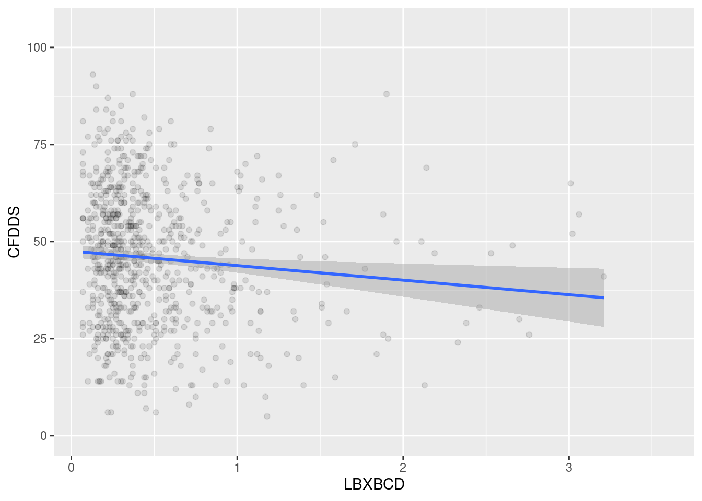

# Load packages for this assignment, do this every time
library(here)
library(ggcorrplot)
library(gtsummary)
library(epiDisplay)
library(tidyverse)
library(ggpubr)
library(broom)EPID 674: Linear Regression in R
Homework 6 Answer Key
Load packages
Load data
# Load saved NHANES homework dataset from the project files. This is the dataset we built in homework 2
load(here(("nhanes_homework_dataset.rda")), verbose = TRUE)Loading objects:
nhanes_homework1. Prior to using linear regression, develop an understanding of the bivariate relationship between your exposure and outcome.
# One option: Plot the bivariate relationship between blood cadmium levels (x- axis variable: LBXBCD) and cognition score (y-axis variable: CFDDS)
ggplot(nhanes_homework,
aes(x = LBXBCD,
y = CFDDS)) +
geom_point(alpha = 0.1) +
geom_smooth(method = 'lm')Don't know how to automatically pick scale for object of type
<labelled/integer>. Defaulting to continuous.
`geom_smooth()` using formula = 'y ~ x'Warning: Removed 1068 rows containing non-finite values (`stat_smooth()`).Warning: Removed 1068 rows containing missing values (`geom_point()`).
# Another option: Perform a correlation test
cor.test(nhanes_homework$LBXBCD, nhanes_homework$CFDDS, method = "spearman")Warning in cor.test.default(nhanes_homework$LBXBCD, nhanes_homework$CFDDS, :
Cannot compute exact p-value with ties
Spearman's rank correlation rho
data: nhanes_homework$LBXBCD and nhanes_homework$CFDDS
S = 85335577, p-value = 0.002518
alternative hypothesis: true rho is not equal to 0
sample estimates:
rho
-0.1085202 Interpret the findings: Based on the plot, we observe that at higher levels of blood cadmium, there is a trend for lower scores on the digit symbol substitution test. Based on the Spearman correlation test (chose because blood cadmium is non-normally distributed) we observe that blood cadmium levels are negatively correlated with digit symbol substitution test scores (rho is -0.097). From both of these assessments, we expect to observe linear regression effect estimate below zero for the blood cadmium variable.
2. Use simple linear regression to test the unadjusted association between blood cadmium levels (variable: LBXBCD) and cognition score (CFDDS)
# One option
lm(CFDDS ~ LBXBCD, na.action = na.omit, data = nhanes_homework) %>%
summary()
Call:
lm(formula = CFDDS ~ LBXBCD, data = nhanes_homework, na.action = na.omit)
Residuals:
Min 1Q Median 3Q Max
-40.738 -12.663 -0.002 12.000 47.558
Coefficients:
Estimate Std. Error t value Pr(>|t|)
(Intercept) 47.562 0.924 51.474 < 2e-16 ***
LBXBCD -3.748 1.389 -2.698 0.00712 **
---
Signif. codes: 0 '***' 0.001 '**' 0.01 '*' 0.05 '.' 0.1 ' ' 1
Residual standard error: 17.13 on 771 degrees of freedom
(1068 observations deleted due to missingness)
Multiple R-squared: 0.009355, Adjusted R-squared: 0.00807
F-statistic: 7.281 on 1 and 771 DF, p-value: 0.007122# Another option
lm(CFDDS ~ LBXBCD, na.action = na.omit, data = nhanes_homework) %>%
tbl_regression() %>%
add_glance_table(c(adj.r.squared, nobs))| Characteristic | Beta | 95% CI1 | p-value |
|---|---|---|---|
| Blood cadmium (ug/L) | -3.7 | -6.5, -1.0 | 0.007 |
| Adjusted R² | 0.008 | ||
| No. Obs. | 773 | ||
| 1 CI = Confidence Interval | |||
Interpret the findings: Magnitude: We observe that a one-ug/dL increase in blood cadmium level is associated with 3.7-unit lower digit symbol substitution score. Yes, this is consistent with our expectations from problem 1. Level of significance: The 95% confidence interval (-6.5, -1.0) does not cross zero. The p-value of 0.007 is less than 0.05. Based on both of these observations, we reject the null hypothesis and conclude that blood cadmium levels are associated with digit symbol substitution test score.
3. Use simple linear regression to test the unadjusted association between educational attainment (variable: education) and cognition score (variable: CFDDS).
# One option
lm(CFDDS ~ education, na.action = na.omit, data = nhanes_homework) %>%
summary()
Call:
lm(formula = CFDDS ~ education, data = nhanes_homework, na.action = na.omit)
Residuals:
Min 1Q Median 3Q Max
-50.698 -10.698 0.302 10.480 52.302
Coefficients:
Estimate Std. Error t value Pr(>|t|)
(Intercept) 32.5201 0.7863 41.36 <2e-16 ***
educationHigh school or GED 11.9218 1.1020 10.82 <2e-16 ***
educationMore than high school 20.1778 0.9465 21.32 <2e-16 ***
---
Signif. codes: 0 '***' 0.001 '**' 0.01 '*' 0.05 '.' 0.1 ' ' 1
Residual standard error: 15.19 on 1588 degrees of freedom
(250 observations deleted due to missingness)
Multiple R-squared: 0.2244, Adjusted R-squared: 0.2235
F-statistic: 229.8 on 2 and 1588 DF, p-value: < 2.2e-16# Another option
lm(CFDDS ~ education, na.action = na.omit, data = nhanes_homework) %>%
tbl_regression(estimate_fun = partial(style_sigfig, digits = 3)) %>%
add_glance_table(c(adj.r.squared, nobs))| Characteristic | Beta | 95% CI1 | p-value |
|---|---|---|---|
| education | |||
| Less than high school | — | — | |
| High school or GED | 11.9 | 9.76, 14.1 | <0.001 |
| More than high school | 20.2 | 18.3, 22.0 | <0.001 |
| Adjusted R² | 0.223 | ||
| No. Obs. | 1,591 | ||
| 1 CI = Confidence Interval | |||
Interpret the findings: High school group: Magnitude: Those with a high school education or GED had 11.9 points higher digit symbol substitution score, relative to those with less than a high school education. Level of significance: The 95% confidence interval (9.8, 14.1) does not cross zero and the p-value is <0.001, so we reject the null hypothesis and conclude that educational attainment is associated with cognition score. More than high school group: Magnitude: Those with more than a high school education had 20.2 points higher digit symbol substitution score, relative to those with less than a high school education. Level of significance: The 95% confidence interval (18.3, 22.0) does not cross zero and the p-value is <0.001, so we reject the null hypothesis and conclude that educational attainment is associated with cognition score.
4. Use multivariable linear regression to test the adjusted association between blood cadmium levels (variable: LBXBCD) and cognition score (variable: CFDDS), after adjusting for educational attainment, sex, race/ethnicity, and age.
# One option
lm(CFDDS ~ LBXBCD + RIDAGEYR + sex + race_eth + education, na.action = na.omit, data = nhanes_homework) %>%
summary()
Call:
lm(formula = CFDDS ~ LBXBCD + RIDAGEYR + sex + race_eth + education,
data = nhanes_homework, na.action = na.omit)
Residuals:
Min 1Q Median 3Q Max
-36.390 -9.685 -0.291 8.987 44.669
Coefficients:
Estimate Std. Error t value Pr(>|t|)
(Intercept) 107.86421 5.91632 18.232 < 2e-16 ***
LBXBCD -2.97703 1.14256 -2.606 0.009351 **
RIDAGEYR -0.97809 0.07887 -12.401 < 2e-16 ***
sexFemale 3.60900 0.99068 3.643 0.000288 ***
race_ethMexican American -10.75276 1.79841 -5.979 3.45e-09 ***
race_ethNon-Hispanic Black -11.30481 1.37591 -8.216 8.98e-16 ***
race_ethOther Hispanic -12.71998 1.97539 -6.439 2.12e-10 ***
race_ethOther Race -2.62262 1.75425 -1.495 0.135324
educationHigh school or GED 8.46994 1.50735 5.619 2.69e-08 ***
educationMore than high school 15.33519 1.37678 11.138 < 2e-16 ***
---
Signif. codes: 0 '***' 0.001 '**' 0.01 '*' 0.05 '.' 0.1 ' ' 1
Residual standard error: 13.62 on 763 degrees of freedom
(1068 observations deleted due to missingness)
Multiple R-squared: 0.3799, Adjusted R-squared: 0.3726
F-statistic: 51.94 on 9 and 763 DF, p-value: < 2.2e-16# Another option
lm(CFDDS ~ LBXBCD + RIDAGEYR + sex + race_eth + education, na.action = na.omit, data = nhanes_homework) %>%
tbl_regression(estimate_fun = partial(style_sigfig, digits = 3)) %>%
add_glance_table(c(adj.r.squared, nobs))Interpret the findings: Magnitude: We observe that a one-ug/dL increase in blood cadmium level is associated with 2.98-unit lower digit symbol substitution score. Level of significance: The 95% confidence interval (-5.22, -0.73) does not cross zero. The p-value of 0.007 is less than 0.05. Based on both of these observations, we reject the null hypothesis and conclude that blood cadmium levels are associated with digit symbol substitution test score. This magnitude of association is attenuated from our observations in problem 2, but the direction of effect and level of significance is consistent.